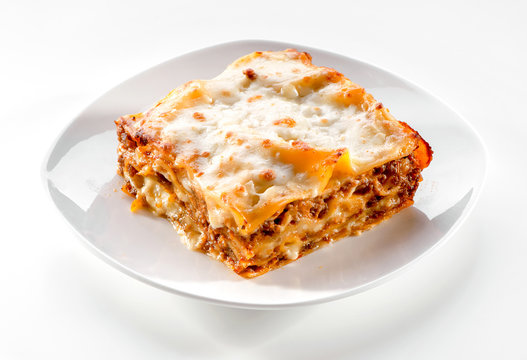

HOME
Lasagna

Description
Lasagna is an easy to make dish composed of layers of pasta, meat and cheese. It's a classic because you onlyy need to stack the ingredients and then pop it in the oven!
Ingredients
- 1 tablespoon of olive oil
- 1 medium yellow onion, finely chopped
- 1 pound lean ground beef
- 1/2 teaspoon kosher salt
- 1/4 teaspoon freshly ground black pepper
- Jar of marinara sauce
- 12 ounces of mozarrella cheese
- 15 dry lasagna noodles
- 16 ounces whole-milk ricotta cheese, divided
Steps
- Heat olive oil in a cast iron skillet over medium-high heat until simmering
- Add onion, ground beef, kosher salt, and freshly ground pepper, and cook, breaking the beef into small pieces with a wooden spoon until it is cooked through. Remove from heat and let cool for 5 minutes.
- Spread a thin layer of marinara sauce on the bottom of a 9x13-inch baking dish. Stir the remaining sauce in with the ground beef.
- Shred mozarella cheese. Place 5 lasagna noodles in baking dish, breaking them if needed to create a single layer. Dollop and spread 1 cup of ricotta cheese and about 1 1/2 cups of meat sauce over the noodles, then sprinkle one cup of motzarella
- Repeat previous step until you've created several layers of ricotta, beef mix, and mozarrella, seperated by lasagna noodles. Cover dish tightly with aluminum foil.
- Bake for 1 hour or until noodles are cooked through. You can check with a knife.
- Uncover and sprinkle remaining mozzarella. Bake uncovered for 8 to 10 minutes more
- Let cool for 15 minutes before serving